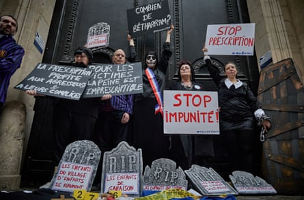
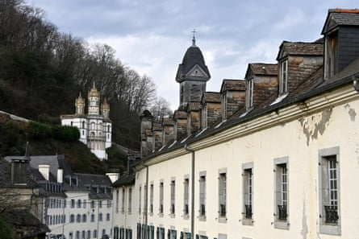
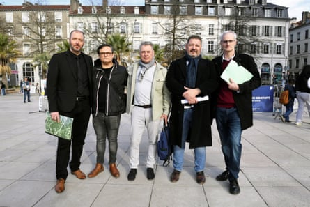

W hen 14-year-old Pascal Gélie saw a brochure for an elite French Catholic boarding school boasting swimming in summer and skiing in winter, he begged his parents to send him. He had just watched the American school drama Dead Poets Society and was expecting “sport and friendship”.
“On the first night, I realised I’d made a terrible mistake,” said Gélie, now a 51-year-old office-worker in Bordeaux. “There were 40 of us in a dormitory with decrepit mattresses. When I whispered to another boy for some toilet paper to take to the bathroom, the supervisor grabbed me by the face and pointed to the stone terrace outside. Someone told me to take my coat because you could be forced to stand outside for hours in the cold and damp. I was made to stand there all night.”
He said: “That was just the start: regular blows to the head, children hit so hard they were bloodied and knocked unconscious. I saw one boy’s hair ripped out. One was hit so hard, he lost 40% of his hearing. Sometimes we would all be made to stand beside our beds for hours at night because someone whispered, or our beds were upturned with us in them. It was absolute terror.”
Protesters outside the ministry of education in Paris hold placards in support of victims of violence in private education establishments.Photograph: Kiran Ridleykiran Ridley/AFP/Getty Images
Gélie is part of a group of former pupils at the private Catholic school, Notre-Dame de Bétharram, whose accounts of violence, rape and sexual assault have exposed what is thought to be the biggest school child abuse scandal in French history. The education minister, Élisabeth Borne, has called it a #MeTooSchools moment.
A French parliamentary inquiry has heard months of testimony on Bétharram, which is located in the foothills of the Pyrenees near the pilgrimage town of Lourdes, and other private schools and children’s homes across France . On Wednesday the inquiry is due to publish its report and 50 recommendations on preventing violence in education. It is expected to be damning on the French state’s failure to protect children.
The Bétharram scandal has also become a political challenge to the prime minister, François Bayrou , who sent several of his children to the school, where his wife also taught catechism. Bayrou’s daughter, now 53, recently revealed she was brutally beaten on a summer camp linked to the school but did not tell her father. Bayrou, who was education minister from 1993 to 1997 and held local political roles, was questioned by the inquiry about whether he knew about abuse at Bétharram and covered it up. He said he had “hidden nothing”, saying his foes were leading a political campaign of “destruction” against him.
In total, 200 legal complaints have been filed accusing Bétharram priests and staff of physical or sexual abuse from 1957 to 2004. Ninety complaints allege sexual violence or rape. Two complaints have led to charges against a former supervisor over the alleged sexual assault of a minor in 2004 and alleged rape of a minor from 1991 to 1994. He has been placed in custody while the investigation continues. Many other accusations were past the time-limit for prosecution. Gélie said: “We want a change in the law to remove time limits for reporting child abuse.”
Boris, 51, who now works in events management, said: “Bétharram was like a supermarket for sexual predators and those of us who were sexually abused or raped often had the same profile: vulnerable children with separated or deceased parents.” From a poor, single-parent family in Bordeaux, he was sent to Bétharram aged 13, ironically because his mother wanted to protect him; at 12, he had been targeted by a grooming gang in Bordeaux who befriended him at his local swimming pool and sexually abused him over several months.
Le Beau Rameau, formerly known as the Notre-Dame de Bétharram institution in Lestelle-Bétharram, near Pau, France.Photograph: Alexandre Dimou/Reuters
Boris, who did not want his surname published, said: “My mother wanted to get me away from Bordeaux so we begged the Bétharram school principal for a place. To persuade him, I told him about the abuse I’d endured, including the horrible detail that my attacker always handed me an envelope containing 50 French francs [the equivalent of €7, or £6].”
Six months after Boris was admitted to Bétharram, the same school principal, Pierre Silviet-Carricart, a priest, called him into his office on his 14th birthday and sexually assaulted him, he said . “Then he handed me an envelope containing 50 francs,” Boris said. “The cynicism and cruelty of that …”
Carricart, was accused of targeting another 11-year-old pupil whose father had just died in a road collision. The boy’s mother, Martine, arranged to travel to the school to collect him at 6am on the day of his father’s funeral. Martine, now 71, who does not want her surname published, said: “Before I arrived, Father Carricart woke my son and took him to the priests’ shower-room where he told him to wash to look nice for the funeral. Then, in that bathroom, he submitted my son to a terrible sexual attack.”
Martine’s son did not tell her about the abuse but she noticed his extreme anguish. She said: “At the crematorium, he was distraught. He lay on his father’s coffin and tried to open it. He said: ‘I want to go with Dad.’”
A decade later, in 1997, aged 21, Martine’s son was arrested for exposing himself. He broke down in police questioning and for the first time spoke about repeated sexual abuse at Bétharram. A police investigation was opened for rape and sexual assault of a minor. Carricart, who denied the allegations, was charged and placed in pre-trial detention.
Five of the nine victims who met François Bayrou: Alexandre Perez, Pascal Gélie, Laurent Lambert, Olivier Bunel and Alain Esquerre in Pau, France.Photograph: HADJ Eric/Paris Match/Getty Images
But to the surprise of the lead investigator on the case, Carricart was released after two weeks, and was subsequently allowed to move to Rome . After French police contacted him for questioning over a second complaint filed in 2000, Carricart killed himself. Bayrou was asked by the parliamentary inquiry whether he had sought information on the case from the investigating magistrate and potentially intervened. He denied intervening in any way.
“My son’s life has been destroyed by this,” Martine said. “At 49, he has no family life, no job. He has been in so many psychiatric units. His skin is damaged from constantly scrubbing himself.”
The organisation of priests that ran the school at Bétharram said in March that it accepted responsibility for the “suffering” of former pupils, and had launched an independent inquiry into what it called “massive abuse” over decades.
Meanwhile, Gélie and the French survivors group have launched their own appeal for anyone affected internationally to contact them. The Bétharram order was a missionary order present across the world, from the UK to Brazil, Thailand and Ivory Coast. “We think this goes far beyond France ,” Gélie said.
Another of those grappling with what he called the “lifelong impact” of the abuse is Laurent, a public sector worker who said he was sexually assaulted in a priest’s office and was once punched unconscious for throwing a snowball in the wrong direction in the playground. He has filed a legal complaint for verbal and physical violence and sexual assault.
“The violence wasn’t just a slap, it was being beaten to the point of unconsciousness,” said Laurent, now 56. “In my two years at the school, it was constant humiliation, violence and assaults – the impact of that is lifelong. I’m speaking out now to make sure this can never happen to any child again.”